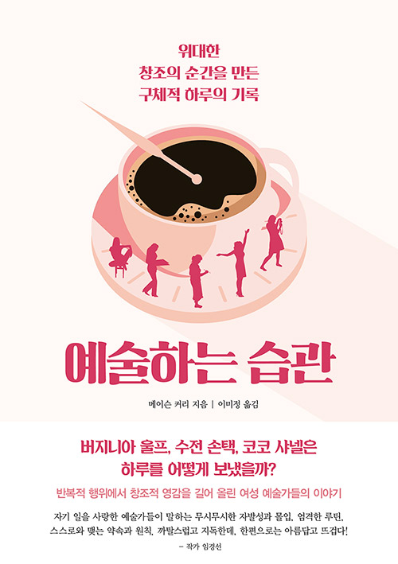

옥타비아 버틀러 - 기분이 어떻든 매일 써라
31
버틀러가 유명한 작가로 성장하자 조언을 구하는 젊은 작가들이 많았다. 그때마다 버틀러는 쓰고 싶은 기분이 나든 안 나든 매일 글을 쓰는 게 가장 중요하다고 말했다.
페타 코인 - 오차 없는 시간표에 중독되다
67
코인의 현재 글쓰기 습관은 뉴욕에서 자리 잡으려고 애썼던 젊은 예술가 시절과 비교해서 상당히 여유로운 편이다. 과거에는 낮에 광고업계에서 일하면서 저녁에 조각품을 만들었다. 일주일에 두 번은 스튜디오에서 저녁부터 다음 날 아침까지 밤샘 작업을 했다. 그러고는 한숨도 자지 않은 채 일하러 나갔다. 평일 저녁에는 일을 마친 후 세 시간 동안 작업을 하고 정상적인 숙면을 취했다. 코인은 이런 일정을 거의 10년동안 유지했다.
쿠사마 야요이 - 스스로 정신병원에 들어간 예술가
69
"나는 매일 고통과 불안, 공포와 싸운다. 내 병을 다스리는 유일한 방법은 계속 예술을 창작하는 것뿐이다." 일본의 예술가 쿠사마는 2011년 자서전 [무한의 그물] 에서 이렇게 말했다.
엘리너 루스벨트 - 하루의 마지막에는 일기를 쓴다
72
첫째는 마음을 차분하게 가라앉혀서 주변에서 무슨 일이 일어나든 동요하지 않고 일하는 것이다. 둘째는 당면한 문제에 집중하는 것이고, 셋째는 특정한 시간에 특정한 활동을 할당하는 하루 일정을 정해 반드시 해야 하는 일을 사전에 계획해두는 것이다. 하지만 그와 동시에 예기치 못한 일을 처리할 수 있는 여지도 남겨두어야 한다.
줄리아 워드 하우 - 제일 힘든 일로 하루를 시작한다
155
하우의 딸은 엄마의 임종을 앞두고 '이상적인 삶의 목표가 무엇인지를' 물어보았다. 그때 91세의 하우는 잠시 숨을 고르고는 단 한 문장으로 대답했다. "배우고, 가르치고, 봉사하고, 즐기는 거란다!"
루스 아사와 - 예술이란 일상의 일부
157
"제 재료는 간단했어요. 자유 시간이 날 때마다 자리에 앉아서 작업을 약간씩 했죠. 조각은 농사와 같아요. 계속 꾸준히 하면 상당히 많이 할 수 있죠."
릴라 캐천 - 주당 40시간을 사수하다
164
주당 40시간 동안 작업을 하고 싶기 때문에 작업 일정을 세운다. 처음에는 힘들었지만 작업을 할 수 있는 시간을 짜내는 데 익숙해졌다.
164
나는 아무것도 하지 못해도, 그냥 가만히 앉아 있기만 해도, 혹은 엉망인 작품들이 나오거나 그런 작품들을 다 부셔버려도(실제로 아무것도 하지 않은 채 내가 만든 많은 작품들을 부수는 의식을 행해도) 전혀 상관하지 않고 그 시간만큼은 스튜디오에서 보내겠다고 마음먹었다. 이것이 내 작업 방식이다.
버지니아 울프 - 극히 조용하고 규칙적인 삶
190
거의 평생 동안 아침 10시부터 오후 10시까지 매일 글을 썼다. 진행 상황을 매일 일기에 기록했고, 생산적으로 일하지 못한 날에는 자신을 채찍질했다.
해리엇 마티노 - 자리에 앉은 첫 25분은 무조건 써라
196
글 쓸 기분이 들 때까지 기다리는 이들에게 작가 마티노는 확실한 조언을 해준다. 자리에 앉은 첫 25분 동안 무조건 쓰라는 것. 마티노는 그 첫 25분 동안 억지로라도 글을 쓰면 '글 쓸 기분을 끌어내기보다 그런 기분이 들 때까지 기다리는 많은 작가들을 괴롭히는 당혹감과 우울'을 피할 수 있다는 사실을 발견했다.
로메인 브룩스 - 고립을 자처해야 가능해지는 일
297
"제가 제 삶의 주인이 되어 사는 게 제게는 필수적인 요소예요. 자기중심적인 이유나 사랑이 부족해서가 아니라 제 자신을 더 많이 나눠주고 싶어서 그렇죠. 매일 같은 집에서, 주로 같은 침실에서 사랑하는 사람과 함께 살면서 열정적인 친밀감을 만끽하는 게 언제나 누군가를 잃어버리는 가장 확실한 방법인 것 같아요."
298
브룩스와 바니는 1930년에 프랑스 남부에 집을 짓고 일종의 계약 동거에 들어갔다. 그곳에서 독립성과 일체감의 이상적인 균형을 찾을 수 있기를 바랐다. 사실 그 저택은 두 개의 거주지가 연결된 것에 훨씬 더 가까웠다. 공동으로 쓰는 거실과 화랑이 있었지만 브룩스와 바니는 각각 독립된 출입구와 작업실, 침실을 사용했다. 각자 하인도 따로 고용했다.
로메인 브룩스 Romaine Brooks (1874~1970)
주로 파리와 카프리에서 활동하는 미국의 화가. 초상화를 전문으로 그리며 브룩스가 그리는 대상은 익명의 모델에서부터 귀족에 이르기까지 다양하다.
알마 토머스 - 일흔여덟의 몸과 스물다섯의 에너지
301
예술은 내가 즐기는 유일한 것이었다. 그래서 나는 자유를 선택했다. 마음 내킬 때 그림을 그리고, 집에 들어갈 필요도 없었다. 내가 하고 싶은 일에 간섭하는 사람도, 멈춰서 자기들이 원하는 것에 대해 논의할 사람도 없었다. 그것이 내가 원하는 삶이고, 그에 대해서는 그 어떤 이견도 없다. 그것이 내가 성장할 수 있는 삶이다.
에드나 페버 - 어떤 환경에서도 글을 쓰는 힘
345
페버는 스물한 살 때부터 생을 마칠 때까지 매일 아침 9시에 일어나 타자기 앞에 앉았고, 하루 천 단어를 목표로 잡고 글을 썼다.
346
이 작가에게는 집필 환경이 중요하지 않았다. 페버는 수년 동안 사실상 어떤 환경에서도 글을 쓸 수 있게 스스로를 단련했다.
루이즈 네벨슨 - 다작의 비결
403
네벨슨은 몇십 년 동안 거의 무명에 가까운 힘든 시절을 견뎠다. 열여덟 살에 끔찍한 결혼생활을 시작했고, 다음 해에 계획에 없던 임신까지 해서 일찌감치 품었던 야망이 물거품이 됐다. 네벨슨이 결혼 생활을 끝내고 뉴욕에서 독립적인 예술가로 자리 잡기까지 10년이 넘는 세월이 걸렸다. 그 이후에도 25년 동안 작품 한 점 팔지 못한 채 전시만 했고, 마흔두 살에 첫 개인 전시회를 열었다. 게다가 거의 육십이 되어서야 네벨슨의 작품이 뉴욕 현대 미술관(MOMA)의 1958년 전시회에 포함되면서 큰 성공을 거둘 수 있었다.
에디스 헤드 - 흑백 옷차림을 고수한 디자이너
408
"할리우드에서 훌륭한 디자이너가 되려면 정신과 의사, 예술가, 패션 디자이너, 양재사, 역사학자, 보모, 구매담당자가 모두 되어야 한다."
헤드는 예술적 감각과 직업윤리 덕분에 성공했지만 할리우드 제작 분야의 거물들과 성격 급한 사람들을 잘 다룬 덕분이기도 했다. 실제로 헤드는 이렇게 말했다. "저는 디자이너라기보다 정치가에 훨씬 더 가까웠죠. 누구의 기분을 맞춰줘야 하는지 잘 알아요." 헤더도 자기 작품에 있어서는 완벽주의자가 되고 싶다는 이상을 품었지만 할리우드 제작 현실에서는 그 이상을 펼칠 수가 없었다. "제 안에는 제 방식대로가 아니면 아예 의상을 만들지 않겠다고 고집하는 프리마돈나가 있었죠. 하지만 현실에서는 주변 사람들과 잘 어울리고 항상 시간을 지키는 일개 직원에 불과했어요." 헤드는 이렇게 말했다. 또한 할리우드에서 일하면서 "예술적 욕구를 억누르는 법을 배웠다."고 덧붙였다. 헤드가 흑백 옷차림을 고집한 이유는 배우들을 위해서였다. 파라마운트 의상부서를 맡았을 때 배우들이 절대적으로 관심의 중심에 서야 한다는 사실을 재빨리 깨달았던 것이다.